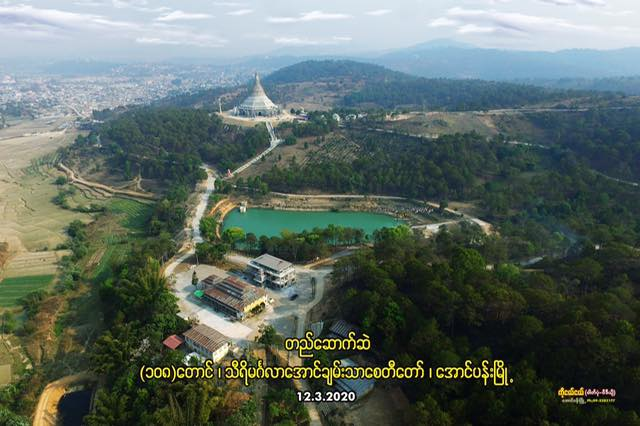

စေတီတော်၏ အလှပုံများ
စေတီတော်မြတ်ကြီး၊ ဘုရားဆင်းတုတော်များ၊ ရေကန်နှင့် ပတ်ဝန်းကျင်ရှုခင်းများ
.jpg)
.jpg)
.jpg)
.jpg)
.jpg)
.jpg)



.jpg)
.jpg)
.jpg)
.jpg)
.png)
.png)
အောင်ပန်းမြို့၏ ကျက်သရေဆောင် — ရွှေတိဂုံပုံစံတူ စေတီတော်မြတ်ကြီး
သီရိမင်္ဂလာအောင်ချမ်းသာစေတီတော်မြတ်ကြီး၏ မိတ်ဆက်နှင့် ဗုဒ္ဓဝစနာ
မြနန္ဒာကျောက်တောင်ပေါ်တွင် တည်ထားပူဇော်ခဲ့သည့် စေတီတော်မြတ်ကြီး၏ သမိုင်းကြောင်း
ရှမ်းပြည်နယ်တောင်ပိုင်း၊ ကလောခရိုင်၊ ကလောမြို့နယ်၊ အောင်ပန်းမြို့ အောင်ချမ်းသာစာသင်တိုက်၏ ပဓာနနာယကဆရာတော်ကြီး ဘဒ္ဒန္တပညာဝံသ (အဂ္ဂမဟာပဏ္ဍိတ)မှ ဦးစီးဦးဆောင်၍ အောင်ပန်းမြို့၏ အနောက်ဘက် တစ်မိုင်နှင့်နှစ်ဖာလုံအကွာ မြနန္ဒာကျောက်တောင်ပေါ်တွင် တည်ထားပူဇော်သည့် ရွှေတိဂုံပုံစံတူ “သီရိမင်္ဂလာအောင်ချမ်းသာ” စေတီတော်မြတ်ကြီး၏ သမိုင်းအကျဉ်း ဖြစ်ပါသည်။
၁၃၆၅ ခုနှစ်၊ ကဆုန်လဆန်း (၉)ရက်၊ နံနက် (၉)နာရီအချိန်တွင် ထင်းရှူးသစ်တောစိုက်ခင်းကို ကြည့်ရင်း မြနန္ဒာကျောက်တောင်ထိပ်ပေါ် ရောက်ရှိခဲ့သည်။ ဘုရားစေတီတော် တည်မည့်နေရာ မြေအနေအထား ရွေးချယ်နေစဉ် ဝတ်ဖြူစင်ကြယ်ဝတ်သည့် ဒါယကာတစ်ယောက် ရုတ်တရက် ရောက်ရှိလာပြီး ငွေလိုနေ၍ ပုတီးတစ်ကုံးကို အတင်းအကျပ် လာရောင်းပေးသည်။ ကျပ်နှစ်ရာတန်တစ်ရွက် ထုတ်ပေးလိုက်ရာ ၎င်းဒါယကာက ၁၀၈ ကျပ်ယူပြီး ၉၂ ကျပ် ပြန်ပေးလာပါသည်။ ၎င်းဒါယကာက ဘုရားတည်ရန်အတွက် ကျပ်တစ်ဆယ်တန် (၉)ရွက်၊ ကျပ်တစ်ကျပ်တန် (၉)ရွက် စုစုပေါင်း (၉၉)ကျပ် လှူဒါန်းကာ ထွက်ခွာသွားခဲ့သည်။
၁၃၆၆ ခုနှစ်၊ နတ်တော်လဆန်း (၉)ရက်၊ တနင်္လာနေ့တွင် (၁) ဆရာတော်၊ (၂) ဦးသူရိယ၊ (၃) ဦးဇဏိလ၊ (၄) ဦးပညာဘောဂ၊ (၅) ဦးနာရဒ၊ (၆) ဦးသူရိယ၊ (၇) ကိုရင်ရဲလွင်၊ (၈) ဦးမှတ်၊ (၉) ဦးသန်းမောင် — ဆရာတပည့် (၉)ဦးတို့က စေတီတော်ရင်ပြင်ကို စတင်မြေညှိခဲ့သည်။ စေတီတော်၏ ဘွဲ့အမည်ကို “မြသိန်းတန်စေတီတော်” ဟု အမည်မှည့်ခေါ်ခဲ့သည်။
၁၃၆၆ ခုနှစ် တပို့တွဲလဆန်း (၉)ရက်၊ ကြာသပတေးနေ့၊ နံနက် (၃)နာရီခန့်အချိန်တွင် အမျိုးသမီး (၂)ဦးက ပန်းသီးနှစ်လုံး ကိုယ်စီကိုင်လျက် ဘုရားကိစ္စအတွက် တိုင်ပင်ဆွေးနွေးရာသို့ ပန်းသီးတစ်လုံးကို အောင်ချမ်းသာစေတီတော်အား ကပ်လှူပေးရန်နှင့် ပန်းသီးတစ်လုံးကို (အောင်ချမ်းသာ) ဆရာတော်အား လှူဒါန်းရန် လျှောက်ထားကြသည်။
ဘုရားစေတီတည်မည့်နေရာကို ရှာဖွေရွေးချယ်သည့် နေ့ရက်တွင် ဝတ်ဖြူစင်ကြယ်ဝတ်သော ဒါယကာတစ်ဦးထံ အလှူငွေ ၁၀၈ ကျပ်ဖြင့် ပုတီးတစ်ကုံး ဝယ်ယူခဲ့ရသည်ကို အကြောင်းပြု၍ ဤဆုတောင်းပြည့် အောင်ချမ်းသာစေတီတော်မြတ်အား ဉာဏ်တော်အမြင့် ၁၀၈ တောင် တည်ထားပူဇော်သွားမည်ဟု ရည်ရွယ်ခဲ့ပါသည်။
၁၃၆၇ ခုနှစ် ဝါဆိုလပြည့်နေ့ (၂-၇-၂၀၀၅)နေ့တွင် မြေနုတ်သန့်စင် ပန္နက်တော်တင်မင်္ဂလာသဘင် ဆင်ယင်ကျင်းခဲ့သည်။ ရန်ကုန်မြို့ သီရိမင်္ဂလာကမ္ဘာအေးစေတီတော် လိုဏ်ဂူပုံစံတူ (၁၈)တောင်နှင့် မြတ်ရွှေတိဂုံစေတီတော်ပုံစံတူ (၁၀၈)တောင်အားဖြင့် မြတ်ဘုရားစေတီတော် (၂)ဆူကို ရည်စူးလျက် တစ်ဆူတည်း စုပေါင်းကာ တည်ထားတော်မူသော အောင်ပန်းမြို့၏ ကျက်သရေဆောင် ဉာဏ်တော်အမြင့် (၁၂၆)တောင်ရှိ “သီရိမင်္ဂလာအောင်ချမ်းသာစေတီတော်မြတ်ကြီး”ကို (၇)ရက်သားသမီး ရပ်နီး/ရပ်ဝေး ကုသိုလ်ရှင်အများကောင်းမှုဖြင့် ဦးဆောင်တည်ဆောက်ပူဇော်ခဲ့ရာ သာသနာတော်နှစ် ၂၅၆၉၊ မြန်မာသက္ကရာဇ် ၁၃၈၈ ခုနှစ် ကဆုန်လပြည့်နေ့ နံနက် (၉)နာရီ (၄၅)မိနစ် မင်္ဂလာချိန်တွင် ရွှေထီးတော် တင်လှူပူဇော်ခဲ့ပါသည်။
ဂဏန်း (၉)၊ (၁၀၈) နှင့် (၁၂၆) တို့နှင့် ဆက်စပ်သည့် ထူးခြားချက်များ
စေတီတော်မြတ်ကြီး၊ ဘုရားဆင်းတုတော်များ၊ ရေကန်နှင့် ပတ်ဝန်းကျင်ရှုခင်းများ

စေတီတော်သို့ သွားရမည့်လမ်း (၂) လမ်း
ဘုရားဖူးလာရောက်ရန်၊ ဆက်သွယ်မေးမြန်းရန်အတွက် ဖုန်းဖြင့် ဆက်သွယ်နိုင်ပါသည်။